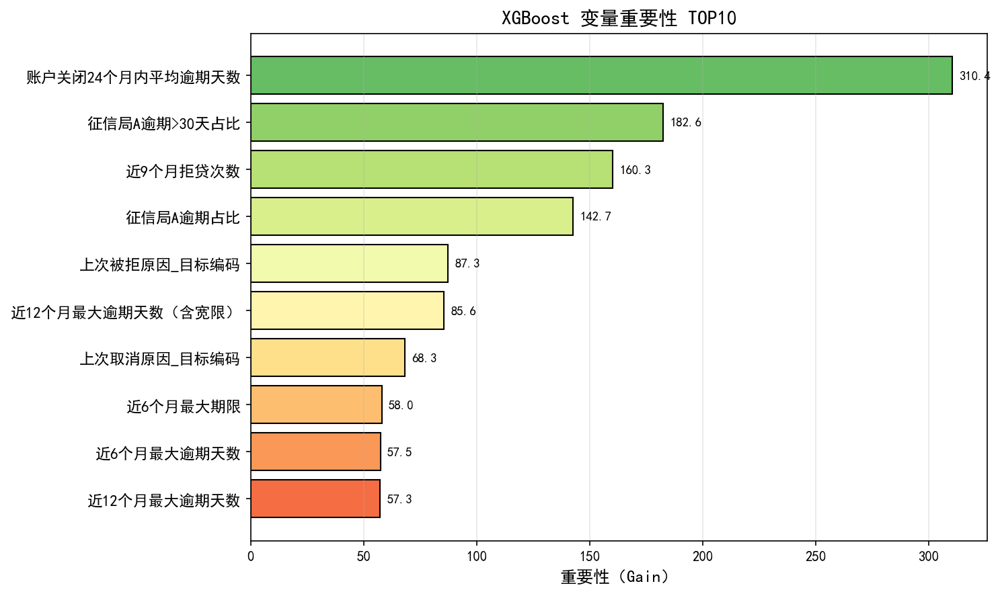
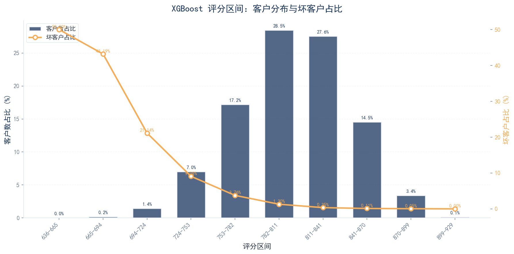
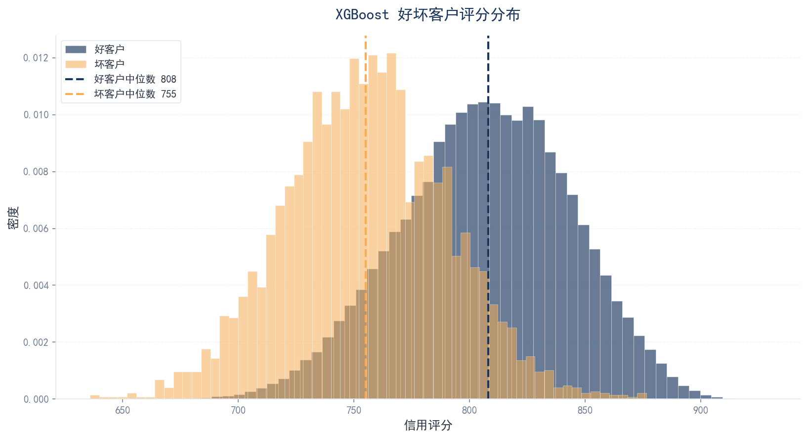
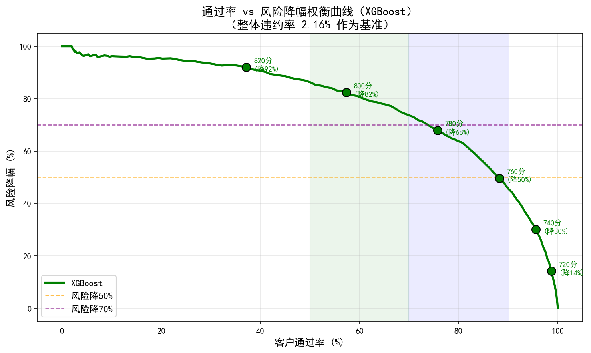
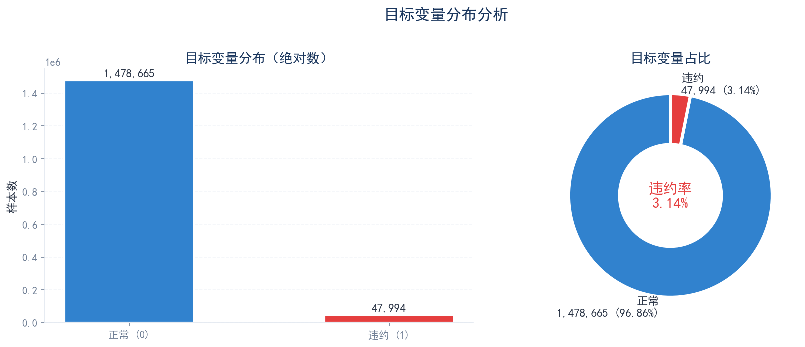
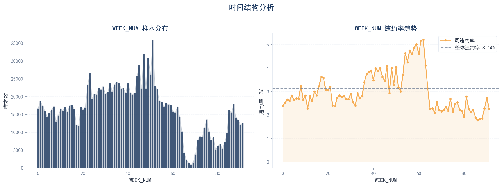

Home Credit
信用风险分析项目
基于 152 万条东南亚消费信贷审批记录，构建完整的信用风险评分模型。覆盖数据探索、特征工程、模型训练、稳定性评估全链路。
项目概述
Project Overview
项目背景
本项目基于 Kaggle 2024 竞赛 "Home Credit - Credit Risk Model Stability" (CRMS) 数据集，针对东南亚（印度尼西亚）消费信贷场景，构建一套完整的信用风险评分模型。项目覆盖数据探索、特征工程、模型训练、稳定性评估等全链路流程。
项目目标
- 构建稳健的信用评分模型，预测客户未来违约概率（PD）
- 展示完整的数据分析、特征工程、建模和评估方法论
- 提高对信贷风险业务逻辑、数据分布稳定性、模型可解释性的理解
- 输出可直接应用的风险策略建议和代码仓库
数据集说明
本项目使用 Home Credit CRMS 2024 主数据集，总计约 25GB（Parquet/CSV 格式），包含以下核心数据表：
| 数据表 | 关联方式 | 字段数 | 业务含义 |
|---|---|---|---|
| base | 主表 | 5 | 申请标识、审批日期、目标变量、WEEK_NUM |
| static | 1:1 | 168 | 静态申请信息（还款行为、金额、频次等） |
| static_cb | 1:1 | 53 | 征信局静态汇总（查询次数、税务记录） |
| applprev | 1:N | 41 | 历史申请记录 |
| credit_bureau_a/b | 1:N | 79/45 | 外部征信局信贷合同明细 |
| person | 1:N | 37 | 人员信息（申请人、联系人、担保人） |
| debitcard/deposit/other | 1:N | 6/5/7 | 借记卡、存款、其他交易流水 |
| tax_registry_a/b/c | 1:N | 5/5/5 | 税务登记扣款记录 |
模型结果
Model Results
核心结论
基于时间序列切分（前70%训练、中15%验证、后15%测试），对比训练 LightGBM、XGBoost、Decision Tree 三模型。XGBoost 在测试集上综合表现最优，被选定为最终应用模型。
| 模型 | Test AUC | Test KS | Test Gini | Recall | 官方得分 | 综合评价 |
|---|---|---|---|---|---|---|
| XGBoost ⭐ | 0.8434 | 0.5283 | 0.6868 | — | 0.6491 | AUC最高、稳定性最好 |
| LightGBM | 0.8426 | 0.5253 | 0.6852 | — | 0.6451 | 速度快，性能接近XGB |
| DecisionTree | 0.7745 | 0.4268 | 0.5490 | — | 0.4315 | 基线模型，可解释性强 |
XGBoost 变量重要性 TOP10
XGBoost 模型变量重要性（Gain）排序显示，最强信号集中在四类特征：
- ① 历史还款行为（DPD）— 最强违约预测因子
- ② 外部征信数据 — 跨机构核心信息源
- ③ 拒贷与反欺诈行为 — 其他机构识别的风险
- ④ 债务结构与申请行为 — 偿债压力与资金需求

XGBoost 变量重要性 TOP10（中文）
TOP10 特征业务含义详解
账户关闭24个月内平均逾期天数
统计客户在过去两年内每次逾期平均拖欠了多少天才还清。直接刻画客户的还款习惯，平均逾期天数越长，说明还款意愿越差或现金流管理越混乱。
征信局A逾期>30天占比
来自外部征信局A，统计客户所有信贷记录中逾期超过30天的合同占比。>30天属于实质性违约，能捕捉客户在 Home Credit 体系外的真实信用表现。
近9个月拒贷次数
统计客户最近9个月被其他金融机构拒绝贷款的累计次数。属于典型的多头申请/反欺诈信号——短期内频繁被拒说明其他机构的风控模型已识别其风险。
征信局A逾期占比
统计客户所有信贷记录中只要发生过逾期的合同占比。反映客户的整体还款纪律性，频繁短期逾期说明资金管理处于"紧绷"状态。
上次被拒原因（目标编码）
客户最近一次被 Home Credit 拒绝的具体原因，经目标编码处理。不同拒贷原因代表不同风险类型，如"资料造假"可能涉及欺诈。
近12个月最大逾期天数（含宽限）
近一年内客户最长一次逾期了多少天，包含宽限期在内。比平均逾期天数更能反映极端风险，一次逾期90天往往意味着突发性重大财务危机。
上次取消原因（目标编码）
客户最近一次主动取消贷款申请的原因，经目标编码处理。取消原因隐含客户真实意图。
近6个月最大期限
客户在近6个月内申请的历史贷款中，期限最长的那笔贷款的期数/月数。若近期频繁申请长期大额贷款，可能暗示资金缺口大。
近6个月最大逾期天数
近期行为的预测力大于远期行为，6个月窗口能反映客户"当前"的还款能力与意愿。
近12个月最大逾期天数
12个月窗口能捕捉季节性或周期性的资金紧张模式（如春节、开学季）。
评分卡策略
Scorecard & Threshold Strategy
评分构造
将 XGBoost 预测的违约概率通过标准评分卡公式映射为信用评分：
基准 odds 设为 1:19。测试集评分范围 636~929 分，中位数 807 分。从评分区间分析可见，随着评分升高，坏客户占比呈现严格单调递减。
评分区间风险分布

XGBoost 评分区间：客户分布与坏客户占比

XGBoost 好坏客户评分分布
业务应用建议与阈值策略
基于 XGBoost 评分，建议采用分档准入策略，在通过率与风险水平之间取得平衡：
| 策略类型 | 阈值 | 通过率 | 准入坏客率 | 适用场景 |
|---|---|---|---|---|
| 保守稳健型 | 770分 | ~82% | ~0.86% | 风险偏好低的存量经营期 |
| 平衡进取型 ⭐ | 750~760分 | 87%~92% | 1.06%~1.29% | 性价比拐点，推荐常规使用 |
| 获客宽松型 | 720~730分 | ~98% | 1.7%~1.9% | 业务扩张期 |
| 极严格型 | 807分 | ~50% | 0.3% | 数学最优但业务上过于严苛 |

通过率 vs 风险降幅权衡曲线（XGBoost）
探索性数据分析
Exploratory Data Analysis
样本概况
训练集共 1,526,659 条样本，static 表含 168 个字段。目标变量极度不平衡，违约率仅 3.14%，属于典型的信贷风险建模场景。

目标变量分布（极度不平衡）
时间结构分析
审批日期覆盖 2019-01-01 至 2020-10-05，共 92 周（WEEK_NUM: 0~91）。不同时间窗口的违约率存在显著波动（1.77% ~ 5.21%），模型稳定性挑战明确。

WEEK_NUM 时间结构与违约率波动
缺失值处理方案
Missing Value Imputation
基于信贷业务逻辑，将 121 个有缺失字段按业务含义分为 8 大类，分别制定填充策略。核心原则是：缺失 = 从未发生 / 没有该项记录，而非数据丢失。
| 分类 | 处理原则 | 字段数 | 核心逻辑 |
|---|---|---|---|
| 计数/频次型 | 缺失 = 0 | 32 | 空值 = 从未发生/没有记录 |
| 金额型 | 缺失 = 0 | 28 | 空值 = 没有该项金额/收入/债务 |
| DPD/逾期天数型 | 缺失 = 0 | 22 | 空值 = 从未逾期 |
| 占比/比率型 | 缺失 = 0 | 5 | 空值 = 从未发生，占比为0 |
| 标记/布尔型 | 缺失 = 0 或 'N' | 6 | 空值 = 否/不存在/无突变 |
| 类别型 | 缺失 = 'Unknown' | 10 | 保留为独立类别，便于编码 |
| 日期型 | 转天数，缺失 = -1 | 15 | 空值 = 从未发生该事件 |
| 特殊型 | 标记 + 中位数填充 | 3 | 利率/期数等不适合简单填0 |
日期型字段特殊处理
15 个日期字段不能直接填 0（0 会被误解为 1970-01-01），统一转为距离 date_decision 的天数差，缺失设为 -1。同时保留 is_{col}_missing 标记列（0/1），树模型可能更关注"是否有该日期记录"而非具体天数。
特殊字段处理
monthsannuity_845L（期数）、interestrate_311L（利率）、eir_270L（实际年化利率）不适合直接填 0。处理策略：① 生成 is_{col}_missing 标记列；② 缺失填中位数，或按信贷类型分群填充中位数。
特征工程
Feature Engineering
基于业务理解和 EDA 发现，从 static 表出发构造三类高价值衍生特征：日期衍生特征、金额比率特征、DPD 聚合特征。同时对 applprev 和 credit_bureau 表进行聚合，生成历史行为汇总特征。最终输出 704 列 特征宽表。
日期衍生特征
- 时间窗口标记：7d/30d/90d/180d/360d/720d 窗口标记
- 日期间差值：获批与被拒间隔、违约新鲜度
- 行为活跃度聚合：近X月有还款行为月份数、最大逾期天数
金额比率特征
- DTI（债务收入比）= currdebt_22A / maininc_215A
- 首付比 = downpmt_116A / credamount_770A
- 月供收入比 = annuity_780A / maininc_215A
- 历史还款比例 = totalsettled_863A / totaldebt_9A
历史申请聚合
- applprev 表 1:N 聚合：count、mean、max、last
- status_219L 透视统计：批准/拒绝/取消次数
- 历史申请金额、期限、状态的统计特征
征信局聚合
- 活跃+已关闭的 totalamount = 外部总信贷规模
- overdueamount > 0 的合同数 = 当前外部逾期笔数
- outstandingamount / credlmt = 信用卡使用率
- dpdmax > 60 的合同数 = 严重违约次数
PSI 稳定性检验
按 WEEK_NUM 将数据分为多个时间窗口，计算各特征在不同窗口间的 PSI（Population Stability Index）。剔除 PSI > 0.25 的不稳定特征，确保模型跨时间部署的稳健性。最终 698 个特征中，61 个极不稳定特征已剔除。
IV 计算与特征筛选
IV Calculation & Feature Selection
Information Value（IV）是信用风险建模中衡量特征预测力的经典指标。本项目对最终宽表中 701 个特征计算 IV（等频分箱），并按预测力分层。
IV 预测力等级
| IV 范围 | 预测力等级 | 处理建议 |
|---|---|---|
| IV > 0.5 | 极强 | 重点关注，可能为"未来信息"需排查 |
| 0.1 ≤ IV ≤ 0.5 | 中等~强 | 核心建模特征 |
| 0.02 ≤ IV < 0.1 | 弱 | 辅助特征，可视内存情况保留 |
| IV < 0.02 | 无预测力 | 建议剔除 |
特征筛选标准
- IV > 0.02（中等以上预测力）
- PSI ≤ 0.25（跨时间稳定）
- 剔除业务逻辑异常变量（如明显为未来信息的数据泄露字段）
Top 特征 IV 值
模型训练与评估
Model Training & Evaluation
采用时间序列切分策略：按 WEEK_NUM 排序，前 70% 为训练集，中间 15% 为验证集，后 15% 为测试集。对比三种模型：LightGBM、XGBoost、Decision Tree（基线）。
评估指标体系
| 指标 | 说明 | 风控解读 |
|---|---|---|
| AUC | ROC曲线下面积 | 0.5=随机，0.8+优秀 |
| KS | Kolmogorov-Smirnov | 最大区分度，>0.3可用，>0.4良好 |
| Gini | 2*AUC-1 | 与AUC等价，但更直观 |
| Precision | 精确率 | 预测为违约中实际违约的比例 |
| Recall | 召回率 | 实际违约中被正确预测的比例 |
| F1 | 调和平均 | Precision与Recall的平衡 |
LightGBM
快速num_leaves=31, learning_rate=0.05, feature_fraction=0.8, bagging_fraction=0.8, bagging_freq=5。使用 early stopping 防止过拟合。
- 训练速度快，内存占用低，适合大规模数据
- 对类别型特征支持好，可直接传入类别特征索引
- 对缺失值有天然处理能力，与业务填充策略互补
XGBoost ⭐
最优max_depth=6, learning_rate=0.05, subsample=0.8, colsample_bytree=0.8。
- 正则化更强（L1/L2），泛化能力通常优于 LightGBM
- 对异常值更鲁棒
- 在本项目中综合表现最优（测试 AUC 最高、官方得分最高）
Decision Tree
基线使用 sklearn DecisionTreeClassifier，max_depth=10, min_samples_leaf=100。
- 可解释性强，可用于规则提取
- 作为基线模型验证特征有效性
模型可解释性分析
SHAP Explainability
使用 SHAP (SHapley Additive exPlanations) 对 XGBoost 模型进行全局与局部可解释性分析，基于 2,000 条测试样本（含 200 条违约样本）。SHAP 值量化了每个特征对模型预测的贡献，红色表示增加违约风险，蓝色表示降低违约风险。
全局特征重要性
下图展示了所有特征对模型预测的平均影响程度。左侧为 SHAP Beeswarm 图（每个点代表一个样本），右侧为平均绝对 SHAP 值的条形图。


关键发现
- 征信局A逾期占比（A类征信局逾期账户比例）是最重要的风险指标，高值样本普遍具有更高的违约概率
- 账户关闭24个月内平均逾期天数 反映了近期信用行为的恶化程度，逾期天数越长风险越高
- 近9个月拒贷次数 和 信贷价格（贷款金额）也是重要的正向风险驱动因素
- 低信贷价格、无逾期记录、提前还款占比高的客户则显著降低违约风险（负向 SHAP 值）
个体样本解释（典型案例）
以下选取了三个具有代表性的样本，通过 SHAP Waterfall 图展示模型是如何从基础概率逐步推演到最终预测结果的。每个条形代表一个特征的贡献，红色向上（增加风险），蓝色向下（降低风险）。

预测概率 70.3% | 实际：违约
征信局A逾期占比(3.5%)和逾期>30天占比(3.5%)是主要风险驱动，信贷价格(252K)进一步推高违约概率

预测概率 0.04% | 实际：正常
信贷价格仅43K、征信局A无逾期、提前还款占比100%，多重保护因素将风险压至极低

预测概率 42.9% | 实际：正常
账户关闭24个月内平均逾期13天、共享手机号客户数5人，导致模型过度警觉；但客户实际未违约，提示模型在该场景下可能偏保守
业务启示
- 逾期历史是核心风险信号：征信局A的逾期相关特征在所有样本中都具有最高的 SHAP 贡献，建议贷前审批必须严格审查征信逾期记录
- 贷款金额与风险正相关：信贷价格（贷款金额）对高风险客户是风险放大器，对低风险客户则是保护因素（小额贷款客户倾向更谨慎），呈现非线性交互效应
- 模型存在误判空间：案例C显示，仅凭历史逾期记录可能将信用正在恢复的客户误判为高风险。建议在自动拒绝阈值附近引入人工复核机制，结合近期还款行为综合判断
- 可解释性支持监管合规：SHAP 分析为每个预测提供了透明的归因路径，满足金融监管机构对 AI 模型"可解释性"的要求
模型稳定性分析
Model Stability Analysis
Home Credit 官方评分公式：mean(Gini) - std(Gini)，按每 2 周一个时间窗口计算。该指标同时考核模型的区分能力和跨时间稳定性，是本项目区别于普通风控建模的核心。
跨时间稳定性监控
- 按 WEEK_NUM 每 2 周切分一个时间窗口，共 46 个窗口
- 计算每个窗口的 Gini、AUC、KS
- 绘制 Gini 随时间变化曲线，识别漂移拐点
- 对比 LightGBM / XGBoost / DecisionTree 的官方得分
稳定性优化策略
- 特征层面：剔除 PSI > 0.25 的高漂移特征（金额类、利率类优先监控）
- 模型层面：增加正则化（减小 max_depth、提高 min_child_weight）
- 样本层面：按时间分层采样，确保训练集覆盖完整时间周期
- 监控层面：建立线上 PSI 监控日报，触发阈值自动告警
业务洞察与建议
Business Insights
核心风险因子
- 历史逾期行为（DPD）是最强违约预测因子，maxdpdlast12m_727P、actualdpdtolerance_344P 等字段 IV 最高
- 多头借贷信号（applications30d_658L、numrejects9m_859L）高值区间违约率显著上升
- 负债水平（currdebt_22A、totaldebt_9A）与收入不匹配是重要风险来源
- 征信查询频次（days30_165L、days90_310L）反映资金饥渴程度
客户分层建议
基于模型预测概率，可将客户分为四层：
| 层级 | 违约概率 | 策略建议 |
|---|---|---|
| 优质客户 | < 1% | 简化审批流程，提供利率优惠，促进复购 |
| 正常客户 | 1%~3% | 标准审批流程，正常定价 |
| 关注客户 | 3%~10% | 加强收入验证，要求担保或提高首付比 |
| 高危客户 | > 10% | 建议拒贷或大幅降低授信额度 |
后续优化方向
深度学习融合
尝试 TabNet、DeepFM 等深度学习模型与传统树模型融合
全链路评分卡体系
构建申请评分卡（A卡）+ 行为评分卡（B卡）+ 催收评分卡（C卡）
线上监控看板
建立线上模型监控看板，实时追踪 AUC、PSI、特征漂移
GNN 反欺诈
探索图神经网络在 clientscnt 关联网络中的反欺诈应用
附录
Appendix
字段命名规则
Home Credit 的字段命名非常有规律，掌握规则后能快速推断陌生字段的含义。
后缀体系
| 后缀 | 英文 | 中文 | 数据类型 | 业务示例 |
|---|---|---|---|---|
| A | Amount | 金额 | float64 | annuity_780A = 月供 |
| D | Date | 日期 | string | date_decision = 审批日 |
| L | Label | 类别 | int/string | status_219L = 状态 |
| M | Masked | 掩码 | string | rejectreason_755M = 拒因 |
| P | Period | 数值/期数 | int/float | maxdpdlast12m_727P = 最大逾期天数 |
| T | Time | 时间维度 | int | dpdmaxdatemonth_89T = 逾期月份 |
前缀规律
| 前缀 | 含义 | 示例 |
|---|---|---|
| avg... | 平均值 | avgdbddpdlast24m = 近24月平均逾期天数 |
| max... | 最大值 | maxdpdlast12m = 近12月最大逾期天数 |
| min... | 最小值 | mindbddpdlast24m = 近24月最小逾期天数 |
| num... / cnt... | 计数 | numactivecreds = 活跃信贷数 |
| pct... | 百分比 | pctinstlsallpaidlate1d = 逾期1天以上还款占比 |
| sum... | 求和 | sumoutstandtotal = 总欠款金额 |
| last... | 最近/上次 | lastapprdate = 最近审批日期 |
| curr... | 当前 | currdebt = 当前债务 |
| total... | 总计 | totaldebt = 总债务 |
| applications... | 申请次数 | applications30d = 近30天申请次数 |
时间窗口规律
| 窗口 | 含义 | 风控意义 |
|---|---|---|
| last1m/last3m | 近1月/近3月 | 最新行为，强预测力 |
| last6m | 近6个月 | 中期趋势 |
| last9m | 近9个月 | 中期趋势 |
| last12m | 近12个月 | 年度周期，很常用 |
| last24m | 近24个月 | 长期历史 |
| from6mto36m | 6-36个月 | 排除近期，看历史深度 |